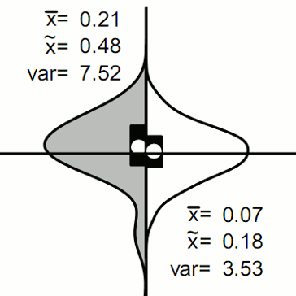
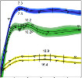
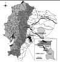
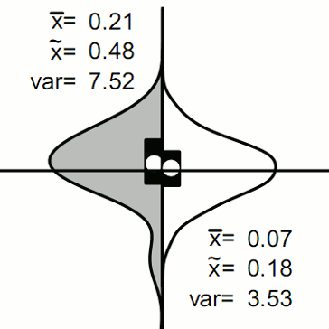
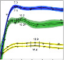
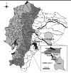

Publications
- Garcia, AR, Gurven, MD, Blackwell, AD. (2017) A matter of perception: perceived socio-economic status and diurnal cortisol on the island of Utila, Honduras. American Journal of Human Biology. 29:e23031. DOI: 10.1002/ajhb.23031.
- Hodges-Simeon, CR, Prall, SP, Blackwell, AD, Gurven, MD, Gaulin, SJC. (2017) Adrenal maturation, nutritional status and mucosal immunity in Bolivian adolescents. American Journal of Human Biology. 29:e23025. DOI: 10.1002/ajhb.23025.
- Blackwell, AD. (2017) Expanding the insurance hypothesis of obesity with physiological cues (Commentary on Nettle, Andrews, and Bateson, "Food insecurity as a driver of obesity in humans: The insurance hypothesis"). Behavioral and Brain Sciences. 40, e108 DOI: 10.1017/S0140525X16001333.
- Gurven, M, Kaplan, H, Stieglitz, J, Trumble, B, Blackwell, AD, Beheim, B, Hooper, P. (2017) The Tsimane Health and Life History Project (THLHP): Integrating anthropology and biomedicine. Evolutionary Anthropology. 26(2) 54-73. DOI: 10.1002/evan.21515.
- Trumble, BC, Stieglitz, J, Blackwell, AD, Allayee, H, Beheim, B, Finch, CE, Gurven, MD, Kaplan, HS. (2017) Apolipoprotein E4 is associated with improved cognitive function in Amazonian forager-horticulturalists with a high parasite burden, The FASEB Journal. DOI:10.1096/fj.201601084R
- Blackwell, AD, Urlacher, SS, Beheim, B, von Rueden, C, Jaeggi, A, Stieglitz, J, Tumble, BC, Gurven, MD, Kaplan, H. (2017) Growth references for Tsimane forager‐horticulturalists of the Bolivian Amazon, American Journal of Physical Anthropology. 162(3) 441-461, DOI: 10.1002/ajpa.23128. Supplemental Files Growth charts in: English, Spanish
- Blackwell, AD. (2016) Helminth infection during pregnancy: insights from evolutionary ecology, International Journal of Women's Health, 2016(8): 651-661. DOI: 10.2147/IJWH.S103529
- Gurven, M, Trumble, BC, Stieglitz, J, Blackwell, AD, Michalik, DE, Finch, C, Kaplan, H. (2016) Cardiovascular disease and type 2 diabetes in evolutionary perspective: a critical role for helminths? Evolution, Medicine & Public Health. 2016 (1): 338-357. DOI: 10.1093/emph/eow028.
- Trumble, BC, Blackwell, AD, Stieglitz, J, Emery Thompson, M, Maldonado Suarez, I, Kaplan, H, Gurven, M. (2016) Associations between male testosterone and immune function in a pathogenically stressed forager-horticultural population, American Journal of Physical Anthropology. 161(3): 494–505. DOI: 10.1002/ajpa.23054.
- Gurven, MD, Yetish, G, Trumble, BC, Stieglitz, J, Cummings, D, Blackwell, AD, Beheim, B, Kaplan, HS, Pontzer, H. (2016) High resting metabolic rate among Amazonian forager-horticulturalists experiencing high pathogen burden, American Journal of Physical Anthropology. DOI: 10.1002/ajpa.23040.
- Blackwell, AD, Trumble BC, Maldonado Suarez, I, Stieglitz, J, Beheim, B, Snodgrass, JJ, Kaplan, H, Gurven, M. (2016) Immune Function in Amazonian Horticulturalists, Annals of Human Biology. DOI: 10.1080/03014460.2016.1189963.
- Urlacher, SS, Liebert, MA, Snodgrass, JJ, Blackwell, AD, Cepon-Robins, TJ, Gildner, TE, Madimenos, FC, Amir, D, Bribiescas, R, Sugiyama, LS. (2016) Heterogeneous effects of market integration on subadult body size and nutritional status among the Shuar of Amazonian Ecuador, Annals of Human Biology. DOI: 10.1080/03014460.2016.1192219.
- Urlacher, SS*, Blackwell, AD*, Liebert, MA, Madimenos, FC, Cepon-Robins, TJ, Gildner, TE, Snodgrass, JJ, Sugiyama, LS. (2016) Physical Growth of the Shuar: Height, Weight, and BMI Growth References for an Indigenous Amazonian Population, American Journal of Human Biology, 28(1): 16-30. DOI: 10.1002/ajhb.22747 *co-first authors
- Blackwell, AD, Tamayo, M, Beheim, B, Trumble, BC, Stieglitz, J, Hooper, PL, Martin, M, Kaplan, H, Gurven, M. (2015) Helminth infection, fecundity, and age of first pregnancy in women, Science 350 (6263): 970-972, DOI: 10.1126/science.aac7902 PDF. Supplementary Materials.
- Steiglitz, J, Trumble, B, Emery Thompson, M, Blackwell, AD, Kaplan, H, Gurven, M. (2015) Depression as sickness behavior? A test of the host defense hypothesis in a high pathogen population, Brain, Behavior, and Immunity, 49:130-139, DOI: 10.1016/j.bbi.2015.05.008
- Blackwell, AD. (2015) Evolution in Four Dimensions: Genetic, Epigenetic, Behavioral, and Symbolic Variation in the History of Life (Revised Edition). Edited by Eva Jablonka and Marion J. Lamb. American Journal of Human Biology 27(3):440-441. DOI: 10.1002/ajhb.22721
- Von Rueden, CR, Trumble, BC, Emory Thompson, M, Stieglitz, J, Hooper, PL, Blackwell, AD, Kaplan, HS, Gurven, M. (2014) Political influence associates with cortisol and health among egalitarian forager-farmers, Evolution, Medicine, and Public Health, eou021, DOI: 10.1093/emph/eou02
- Stieglitz, J, Jaeggi, AV, Blackwell, AD, Trumble, BC, Kaplan, H, Gurven, M. (2014) Work to Live and Live to Work: Productivity and Psychological Well-Being in Adulthood and Old Age" in Weinstein, M, Lane, M, ed., Sociality, Hierarchy, Health: Comparative Biodemography, National Academies Press, Washington DC
- Pisor AC, Gurven M, Blackwell, AD, Kaplan H, Yetish, G. (2013) Patterns of senescence in human cardiovascular fitness: VO2max in subsistence and industrialized populations, American Journal of Human Biology, 25(6): 756–769. DOI: 10.1002/ajhb.22445
- Blackwell AD, Martin MA, Kaplan H, Gurven M. (2013) Antagonism between two intestinal parasites in humans: The importance of coinfection for infection risk and recovery dynamics, Proceedings of the Royal Society B 280(1769) 20131671. DOI: 10.1098/rspb.2013.1671
- Martin, M, Blackwell, AD, Gurven, M, Kaplan, H. (2013) Make new friends and keep the old? Parasite coinfection and comorbidity in Homo sapiens, in Brinkworth J & Pechenkina K, eds, Primates, Pathogens and Evolution, Springer, New York
- Liebert MA, Snodgrass JJ, Madimenos FC, Cepon TJ, Blackwell AD, Sugiyama LS. (2013) Implications of market integration for cardiovascular and metabolic health among an indigenous Amazonian Ecuadorian population. Annals of Human Biology 40(3) 228-242. DOI:10.3109/03014460.2012.759621.
- Stieglitz J, Blackwell AD, Kaplan, H, Quispe Gutierrez, R, Cortez Linares, E, Gurven, M. (2012) Modernization, sexual risk-taking, and gynecological morbidity among Bolivian forager-horticulturalists. PLoS ONE 7(12): e50384. DOI:10.1371/journal.pone.0050384.
- Gurven MD, Blackwell AD, Eid Rodriguez, D, Stieglitz, J, Kaplan, H. (2012) Does blood pressure inevitably rise with age? Longitudinal evidence among forager-horticulturalists, Hypertension, 60(1): 25-33. doi: 10.1161/HYPERTENSIONAHA.111.189100.
- Blackwell AD, Gurven MD, Sugiyama LS, Madimenos FC, Liebert, MA, Martin, MA, Kaplan HS, and Snodgrass JJ. (2011) Evidence for a peak shift in a humoral response to helminths: Age profiles of IgE in the Shuar of Ecuador, the Tsimane of Bolivia, and the U.S. NHANES, PLoS Neglected Tropical Diseases 5(6): e1218. DOI: 10.1371/journal.pntd.0001218.
- Madimenos FC, Snodgrass JJ, Blackwell AD, Liebert MA, Cepon, TJ, and Sugiyama LS. (2011) Normative calcaneal quantitative ultrasound data for the indigenous Shuar and Non-Shuar colonos of the Ecuadorian Amazon, Archives of Osteoporosis 6(1-2): 39-49, DOI: 10.1007/s11657-011-0056-x.
- Madimenos FC, Snodgrass JJ, Liebert M, Blackwell AD, and Sugiyama LS. (2011) Physical activity in an indigenous Ecuadorian forager-horticulturalist population as measured using accelerometry, American Journal of Human Biology 23(4): 488-497. DOI: 10.1002/ajhb.21163.
- Blackwell AD, Snodgrass JJ, Madimenos FC, and Sugiyama LS. (2010) Life history, immune function, and intestinal helminths: trade-offs among immunoglobulin E, C-reactive protein, and growth in an Amazonian population, American Journal of Human Biology 22 (6): 836-848. DOI: 10.1002/ajhb.21092.
- Blackwell, AD, Pryor, G, Pozo, J, Tiwia, W, and Sugiyama, LS. (2009) Growth and market integration in Amazonia: A comparison of growth indicators between Shuar, Shiwiar, and nonindigenous school children, American Journal of Human Biology 21(2): 161-171. DOI: 10.1002/ajhb.20838.
- Matthews A, Huckans MS, Blackwell AD, and Hauser P (2008) Hepatitis C Testing, Infection, and Treatment Rates in Bipolar patients with and without Co-Morbid Substance Use Disorders, Bipolar Disorders, 10(2): 266-270
- Huckans, MS, Loftis, JM, Blackwell, AD, Linke, A, and Hauser, P. (2007) Interferon Alpha Therapy for Hepatitis C: Treatment Completion and Response Rates among Patients with Substance Use Disorders. Substance Abuse Treatment, Prevention, and Policy 2(1): Article 4
- Huckans, MS, Blackwell, AD, Harms, TA and Hauser, P. (2006) Hepatitis C Disease Management Patterns in High-Risk Populations: Testing, Infection, and Treatment Rates Among Patients with Schizophrenia, Schizoaffective Disorder, and Substance Use Disorders. Psychiatric Services 57(3):403-406.
- Turner, EH, Loftis, JM, and Blackwell, AD. (2006) Serotonin a la carte: Supplementation with the serotonin precursor 5-hydroxytryptophan. Pharmacology and Therapeutics 109(3): 325-338
- Huckans, MS, Blackwell, AD, Harms, TA, Indest, DW, Hauser, P. (2005) Integrated HCV Treatment: Addressing Co-morbid Substance Use Disorders, Psychiatric Disorders, and HIV Infection. AIDS 19(Suppl 3): S106-S109
- Turner, EH and Blackwell, AD. (2005) 5-hydroxytryptophan plus SSRIs for interferon-induced depression: Synergistic mechanisms for normalizing synaptic serotonin. Medical Hypotheses 65(1): 138-144
- Fireman, M., Indest, DW, Blackwell, AD, Whitehead, AJ, and Hauser, P. (2005) Addressing Tri-morbidity (Hepatitis C, Psychiatric, and Substance Use Disorders): the Importance of Routine Mental Health Screening as a Component of a Co-management Model of Care. Clinical Infectious Diseases 40(Suppl. 5): S286-S291
- Vogt, TM, Blackwell, AD, Giannetti, AM, Bjorkman, PJ, and Enns, CA. (2003) Heterotypic interactions between Transferrin Receptor and Transferrin Receptor 2. Blood 101:2008-2014
- Green, F, O'Hare, T, Blackwell, AD, and Enns, CA. (2002) Association of human transferrin receptor with GABARAP. FEBS Letters 518:101-106